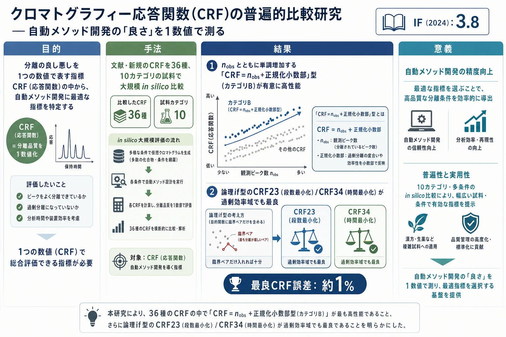

クロマトグラフィー応答関数(CRF)の普遍的比較研究 — 自動メソッド開発の「良さ」を1数値で測る

<!-- 方針: ほぼ全訳＋必要に応じた補足。原文構成に沿って訳出。「> 補足:」は訳者注。数式は原文の式番号を保持。 -->
書誌情報
- 原題: A universal comparison study of chromatographic response functions
- 著者: Eva Tyteca, Gert Desmet（ブリュッセル自由大学 化学工学科 (CHIS-IR), ベルギー）
- 掲載: Journal of Chromatography A 1361 (2014) 178–190. https://doi.org/10.1016/j.chroma.2014.08.014
- インパクトファクター: 3.8（J. Chromatogr. A, JCR 2024 / Clarivate）
- 受理経過: 受領 2014-07-04 / 改訂 2014-08-04 / 採録 2014-08-05 / オンライン公開 2014-08-13
補足: CRF (Chromatographic Response Function, クロマトグラフィー応答関数) = 1本のクロマトグラムの「分離の良さ」を1つの数値に要約する指標。自動メソッド開発（コンピュータが条件を探索する)で「どの条件が最良か」を判断する 目的関数として使う。本論文は生薬QCの特定物質を扱うものではないが、指紋・多成分定量法を自動最適化する際の“採点基準”をどう選ぶかという、分析法開発の根幹に関わる方法論研究。用語: $n_{obs}$=観測ピーク数、$R_s$=分離度、$R_{s,crit}$=臨界ペア（最も分離が悪い隣接ペア）の分離度、$R_{s,req}$=必要最小分離度、$d_0$=判別係数、$f/g$=Kaiserのピーク谷比、NIP=正規化非整数部、$N$=理論段数（効率)、$t_R$=保持時間。
要旨（Abstract）
いわゆるクロマトグラフィー応答関数(CRF)の大規模 in silico 比較研究を報告する。CRFは分離品質を1つの数値で表す記述子で、探索ベースの分離最適化を導くのに使える。文献既存＋新規の包括的なCRF群を、1次クロマトグラフィーデータ（＝スペクトル情報なし）に基づく探索を導く能力、および試料の成分数が事前に不明な場合について比較した。利用可能な分離能に基づいて結果を論じる。観測ピーク数とともに単調増加するCRFは、その性質を持たないCRFより有意に良好であった。判別係数(d0)やピーク谷比(f/g)に基づくCRFは、Snyderの分離度Rsに基づくCRFよりピークの非対称性にうまく対処できる。ただし前者はノイズレベルが大きくなると利点を失う。多くのCRFは、試料をベースライン分離するのに必要な効率ちょうど、あるいは少し下の効率のカラムで探索したとき最良に働く。全効率域で最良の結果は、まず観測化合物数を優先し、その後で分離度や所要分析時間で条件を順位付けするCRFで得られた。効率が不足するカラムで探索する場合、最良のCRFでも試料に関する情報不足に悩まされ、スペクトル情報に頼らないと逸脱を避けられない。
1. 序論（Introduction）
クロマトグラフィーのメソッド開発(MD)は、調整パラメータが多く（有機溶媒種・固定相・温度・グラジエントプロファイル・pH・イオン強度…)、ピーク重なりの確率も高いため、多くの試行錯誤を伴う。この探索を助けるため、多様な自動MD戦略が提案されてきた。自動MDは大きく (i) 保持モデルベース（Drylab, ChromSword)、(ii) 探索ベース（Simplex, 遺伝的アルゴリズムGA)、(iii) 両者の組合せ（実験計画法DoE, PEWS2=Predictive Elution Window Shifting and Stretching)に分けられる。変数が多くて全点走査できない設計問題では、全体の分離品質を1数値で表す規準が、これらの自動戦略を効率よく最適解へ導くのに必要となる。この品質規準が CRF——Morgan と Deming が1975年に導入した概念である。以来、多数のCRFが提案され、どれが最適かの議論は今なお続いている。良いCRFの設計は、成分数が未知のときや、副次目標（分析時間の最小化など)を同時に満たしたいとき特に難しい。
本研究は、最も広く使われる文献CRF＋いくつかの新規CRFをグローバルに比較する。多数の多様な試料で結論づけるため、in silico試料（計算機生成だが現実的な入力パラメータ)を用いる数値研究とした。この方法は「最良解が常に既知」という利点があり、CRFがそれを見つけられるかを一義的に判定できる。とくに成分数が未知の場合（すべての成分が既知の場合より一般的で難しい問題)、および1次データ（単一検出器信号のみ。例: 単波長UV/vis)の場合に重点を置く。1次データでは「完全に重なったピークは検出できない」「部分的に重なったピークの分離度は定量できない」という制約がある。もし全ピークが常に見えるなら（スペクトル検出やモデリング等のケモメトリクスを使えば)、最も臨界なペアの分離度や純度が直接の正しい規準になるため、CRF選択問題は自明（＝つまらない)になる。
探索法には、グリッド上の全点を走査する単純な総当たり(ブルートフォース)を採用した。Simplex・GA・PEWS2などの既存の“賢い”探索法ではなく総当たりにしたのは、研究の結論が特定の探索アルゴリズムの癖に依存しないようにするためである。
2. 方法：比較の枠組み
2.1 CRFの分類（Table 1）
考慮したCRFは2軸で分類される。
- カテゴリ I: 必要理論段数 $N$ の最小化を狙う（＝最小の効率で分離できる条件を探す)。
- カテゴリ II: 分析時間の最小化を狙う（時間成分を含む定義)。
- サブカテゴリ A / B: 観測化合物数 $n_{obs}$ とともにCRF値が単調増加しない(A)／する(B)。文献のCRFの多くはAだが、成分数が未知の探索では $n_{obs}$ への依存性が本質的と予想されるため、多くの文献CRF(A)をB形式へ変換して比較に加えた（後述)。
主要な下位指標：
- 分離度 $R_s$。飽和処理版 $R^{*}_s$ は必要最小分離度を超えた分を数えない：
$$R^{}_s = R_s\ \ (R_s < R_{s,req}),\qquad R^{}_s = R_{s,req}\ \ (R_s \ge R_{s,req}) \tag{6}$$
本研究を通じて $R_{s,req} = 1.6$ を用いた。
- Kaiserのピーク谷比 $f/g$ と判別係数 $d_0$。両者は2ピークが完全分離すると上限値 $=1$ に達し、余分な分離を品質値に含めない利点がある（$R^{*}_s$ と同様)。ただしピーク高さが大きく異なる場合、$d_0$ は $f/g$ より読み取り誤差に強いとされる。読み取りには2モードを検討: (i) 真値（絶対分離度 $\sim10^{-5}$ の精度で決まる)、(ii) 実用上より重要な「最大0.99に制限」。後者はベースラインノイズ——$d_0$/$f/g$ が1に近づくと有効数字を区別できなくなる主要問題——を模擬するためのもの。
2.2 in silico 試料とデータ生成
保持を LSSモデル $\log k' = \log k_w - S\varphi$ で表し、$k_w$・$S$・$c_0$（濃度)の範囲を変えて10の試料カテゴリを定義した（Table 2）。例: カテゴリ1は $k_w\in[200,1000]$、$S\in[8,15]$、$c_0\in[1,10]$；カテゴリ5は $k_w\in[10,2000]$、$S\in[5,10]$、$c_0\in[1,100]$、など。ピーク形状は、テーリング緩和パラメータ $\tau$ を変えて、完全ガウス($\tau=0$)〜指数修飾ガウス(EMG1: $0.5\le\tau\le1.5$、EMG2: $0.5\le\tau\le2.5$)まで非対称性を変化させた（Fig. 1）。分離度は「4-width」または「5-width」基準で算出。
各試料について、グラジエント開始組成 $\varphi_0$ と勾配 $\beta t_0$ を格子状に振り、$37\times37=1369$ 通りのグラジエント条件のクロマトグラムを生成した。保持係数の上限は $k_{upper}=25$（MDで一般的な慣行。過大な保持域へ探索を広げるより別感度のカラムへ切り替える、という考え。$k_{upper}$ の値や上限を課すこと自体は主要結論に影響しないことを確認)。
各試料で $N_{req}$（または $t_{req}$)が最小となる $\varphi_0$・$\beta t_0$ の組を「最良解」($N_{req,min}$／$t_{req,min}$)とし（Fig. 2a/3aの白矢印)、単一最良点だけでなく上位x%（典型的に x=2 または 10)の領域を「絶対真値」の等高線図上で決めた。上位x%に着目すると比較が滑らかになり（格子の粗さに依存しにくい)、実務的にも妥当（MDでは“唯一の”最良条件より、許容時間で完全分離できれば満足する)。さらに各試料で、効率 $N$ を $N_{req,min}$ の 27・9・3・1・1/3・1/9・1/27 倍にしたクロマトグラムを7通り生成し、Table 1の全CRFを1369点それぞれで計算した。
CRFが最良条件をどれだけ当てられるかは、あるCRFの提案する上位x%解と「真の」上位x%解との平均距離 $\langle\delta_{error}\rangle$ で定量した（式9）。$\varphi_0$ と $\log\beta$ の正規化ユークリッド距離の平均で、例えば $\langle\delta_{error}\rangle=0.02$ は「最適な開始組成 $\varphi_0$ に平均2%の誤差、または勾配 $\beta$ の対数に平均2%の誤差」に相当する。この誤差が許容できるか（少数の大きく異なる成分)、致命的か（多数の似た成分)は試料による。Fig. 2/3 には $\langle\delta_{error}\rangle=0.1$ のスケールバーを付し、推定誤差と「良い解の領域の広さ」を直接比べられるようにした。「絶対真値」は、臨界ペアの分離品質 $d_0=0.9999$ を達成するのに必要効率 $N$ が最小（カテゴリI)、または所要分析時間が最小（カテゴリII)となる条件と定義した。
3. 結果と考察（Results and discussion）
3.1 新しいCRFの構築
先行研究でも指摘されるとおり、CRFが解空間の正しい領域へ導けるのは、「分離度は上がるが分離成分数は少ない条件」よりも「成分が1つ多く見える条件」を常に優先するよう定義されている場合に限る。これを曖昧さなく実現するには、CRFを「観測成分数を表す整数 $n_{obs}$」＋「0（1つ以上のピークが分離不良）〜0.99（全ピーク完全分離）で変わる正規化非整数部 NIP」で構成すればよい：
$$CRF = n_{obs} + \text{NIP},\qquad 0 < \text{NIP} < 0.99 \tag{10}$$
こうすれば、成分が1つ多く見える条件は、他のどんな条件（分離度が高かろうと分析時間が短かろうと)より必ず高いCRF値になる。文献CRFの多く（カテゴリA)はこの性質を欠くが、多くは元の式を「取りうる最小・最大値」で正規化して $n_{obs}$ に足すことでB形式に変換できる。こうして文献のCRF2–CRF5から CRF24–CRF27、CRF12・CRF15–CRF22・CRF35から CRF36–CRF43 を作った。例: CRF4は全ピークが $R_{s,crit}$ 以上のとき最大 $1/2^{n-1}$、全重なりでゼロ。分離品質が上がるとCRF値が下がる型（例: CRF3は $f/g$ や $d_0$ が全ピークで1.0のときゼロ)では、「1 − 正規化量」をNIPとして CRF25 を作る（分母のゼロを避けるため $f/g$・$d_0$ の下限を0.01に制限)。
さらに、計算機なら論理if判定も使えるため、if型CRFも導入した。まず2つの最適化目標そのものに基づく CRF23（必要段数)・CRF34（必要時間)を導入。これらは臨界ペアの分離度から間接的に、テストクロマトグラム生成に使った段数 $N$ を用いて必要段数を外挿して求める：
$$N_{req} = N\left(\frac{R_{s,req}}{R_{s,crit}}\right)^2 \tag{11}$$
$$t_{req} = \frac{N_{req}}{N}(1+k)\,t_0 \tag{12}$$
$N_{req}$・$t_{req}$ は $d_0$・$f/g$・$R_s$ より正規化が難しい（正規化因子となる $N_{req,min}$・$t_{req,min}$ が探索中は未知)。if構成はこれを回避し、観測ピーク数最大の条件を厳密に優先する。ただし最小 $N_{req}$／$t_{req}$ を1と置く実用的定義を使えば、if判定は次の1数値でも表せる：
$$CRF_{23} = n_{obs} + \frac{1}{N_{req}},\qquad CRF_{34} = n_{obs} + \frac{1}{t_{req}} \tag{13, 14}$$
CRF23/CRF34の欠点は、測定した $R_s$ を必要段数へ変換する必要があること。これが容易なのは完全ガウスピークのときだけで、非対称ピークでは歪度・高さ比ごとに校正表が要り非実用的。代替として、$R_s$ や $R^{*}_s$ で直接順位付けする（CRF6・CRF32。現行の多くのMDソフトの方式)手もあるが、歪んだピークでは $R_s$ 直用も不正確（歪むほど完全分離に必要な $R_s$ が上がる)。実務では分析者の勘で $R_{s,req}$ を手動で上げる（例: テーリング時は $R_{s,crit}=1.5$ でなく2を要求)が、自動探索では不可能。そこで、ピーク歪度に依らず有効な $d_0$/$f/g$ を直接使う手がある。CRF31 = $n_{obs}$ + 臨界ペアの $d_0$。ただし $d_0$/$f/g$ は完全分離で1に飽和するため、過剰効率で探索すると多くの条件が1付近になり識別できない。これを補うため、CRF31を、臨界ペアの第1ピーク末端と第2ピーク先端の距離 $\Delta_{min}$（時間単位)を補助規準に含めるif関数で拡張した：
$$CRF_{51} = \Delta_{min}\ \ \text{if}(y_{crit}=0.99\ \text{and}\ n_{obs}=\max(n_{obs})) \tag{15}$$
$y_{crit}<0.99$ の場合の順位付けはCRF31のまま。距離定義を2通り（CRF51は $\Delta_{1,i}$、CRF52は $\Delta_{2,i}$)検討した。時間最小化(カテゴリII)についても同様にB形式化し、if型（CRF52・CRF53:全ピークが $d_0$/$f/g>0.99$ で分離するまではCRF31値、その後ピーク間距離と総分析時間に基づくNIPを加算)を構築した。
3.2 定性的比較（等高線図）
Fig. 2 は必要 $N$ 最小化を狙うCRFの等高線図（$\varphi_0$ 対 $\beta t_0$）。Fig. 2aは試料の $k_w$・$S$ を使った「絶対真値」($d_0=0.9999$ を最小 $N$ で達成する条件)で、各CRFはこれをどれだけ再現できるかで評価する。この試料では CRF1・CRF23・CRF28 は比較的よく再現するが、CRF3・CRF4 は完全に失敗（白矢印＝最高CRF値の領域が真値とずれる)。Fig. 3 は時間最適化(カテゴリII)版で、CRF11・CRF14・CRF19 は真値から大きく逸脱する一方、CRF35・CRF39（II-B)はよく再現した。ただし後者2つの好成績は偶然で、完全に失敗する試料も多かった。
3.3 定量的比較
観測を一般化・定量するため、$\langle\delta_{error}\rangle$（式9)を利用可能 $N$ の関数として算出した。上位 x=10% と x=2% を比べる(Fig. 4a/b)と、追求する解の品質が高いほど（x が小さいほど)誤差は大きくなる（N最小化・時間最小化とも)。より厳しい試験になる x=2% を以降(Fig. 5–7)の基準とした。
もう一つの重要な観察は、多くの良いCRFが $N_{req,min}/3$ 付近で誤差最小になること。すなわち、試料をベースライン分離するのに必要な最小段数の約1/3の効率のカラムで探索したとき最良に働く（x%が小さいほどこの最小は鮮明)。
Fig. 4a–dは、カテゴリI（破線・$n_{obs}$ と非単調)とカテゴリII（実線・単調)の明確な差も示す。カテゴリIの多くは非常に低性能——分離成分数と分離品質が干渉し、例えば「広く離れた9ピーク」が「臨界ペアがやや悪い10ピーク」より高得点になり、探索を誤誘導するため。
- 例外: CRF1・CRF2 は定義上は $n_{obs}$ 単調増加を課さないが実際にはほぼその挙動を示し、効率不足域（$N_{req,min}$ の右)ではそこそこ良い。しかし過剰効率域（左)では、全ピークがベースライン分離すると同じ飽和値に達し条件を区別できず完全に失敗する。正規化版のCRF24・CRF32も $N>N_{req,min}$ で失敗するが、NIP形式のぶん効率不足域ではCRF1/2よりやや良い。CRF6は非正規化で効率不足域は劣るが、$R_{s,crit}/R_{s,req}$ が飽和しないため過剰効率域で2番目に良い。
- 効率不足域の最良は CRF24・25・26・28・29・30・31・32 と if型（赤)で、どれも突出せず横並び。＝効率不足で探索すると、探索を明確に導ける“魔法のCRF”は存在しない。ピークが欠けて見えない以上、1次データだけの探索は「盲目の探索」になり、欠けたピークの位置も動かしやすさも分からない。全ての良いCRFがこの下限の壁に当たる。
- 過剰効率域では CRF23 が突出。粗い効率推定に基づくにもかかわらず最良なのは、全ピークがベースライン分離しても値が固定飽和しないため。他のif型 CRF50・CRF51 が劣るのは、ピーク間距離＋$d_0$/$f/g$ の組合せが、CRF23が間接的に依る $R_s$ 値より有益な情報を持たない（ピーク幅の情報を欠く)ため。$d_0$/$f/g$ ベースや $R^{*}_s$ ベースが過剰効率で失敗するのは、これらが飽和する性質のため。
時間最適化(Fig. 4c/d)も同様: カテゴリBがAより概ね大幅に良く、$N_{req,min}/3$ 付近で最良、最適化目標そのものに基づく CRF34 が総合最良。効率不足域では CRF34・35・37・39・41・50・51 が $N<N_{req,min}/9$ で横並びに良い（見えない壁)。CRF42 は物理的根拠が薄いのに過剰効率域で非常に良い。時間最適化はN最適化より平均誤差が明らかに大きい（y軸スケールの差)——「完全分離＋最短時間」の2目標を1数値に結合するのが本質的に難しいため。
ノイズの効果(Fig. 5a/b): ノイズ無し(5a)では、$d_0$/$f/g$ ベースのカテゴリII（青実線)が $N_{req,min}/3$〜$3\,N_{req,min}$ の範囲で断然最良（幾何平均CRF29・算術平均CRF30・両者混合CRF28の差は僅か)。しかしノイズ有り(5b)ではこの優位が消える。
成分数・ピーク非対称の効果(Fig. 6・7): nc=5・10・15成分、EMG1/EMG2/純ガウスで検討。純ガウス(Fig. 6d)では、ガウスピーク集合の必要段数に直結する CRF23 が $N>N_{req,min}/3$ でほぼ誤差ゼロ（低N域では他と同じ情報不足に苦しむ)。時間最適化(Fig. 7)でも、平均誤差はN最適化より大きい・カテゴリBがAより有意に良い・論理if型CRF34が総合最良、という主要観察が成分数やピーク対称性に依らず成立。N最適化用に設計され時間成分を持たないCRF23・CRF31が、時間最適化専用CRFの多くより相対的に良く働く点も、時間最適化の難しさを物語る。
4. 結論（Conclusions）
1次データ（スペクトル情報なし)かつ成分数未知という条件で、文献＋新規のCRFを in silico で包括比較した。
- 最良のCRFはカテゴリB、すなわち $CRF = n_{obs} + \text{NIP}$（NIPは0〜1の正規化非整数部)型。$n_{obs}$ とともに単調増加しないCRFより有意に良い。
- 臨界ペアの $d_0=0.9999$ 達成に最小効率 $N$／最小時間を要する条件を当てる能力は、探索時のカラム効率 $N$ に強く依存。多くのCRFは、必要効率ちょうど〜やや下（定量的には $N_{req,min}/3$ 付近)で最良、誤差 約1%。
- どの条件でもベースライン分離できない効率不足域では、最良のCRFでも同じ下限の壁に当たる（不完全分離→情報不足は原理的に不可避)。
- 過剰効率域では、$d_0$/$f/g$/$R^{*}_s$ が同レベルに飽和して識別力を失う中、最良解を拾えるのは論理if型の CRF23（N最小化)・CRF34（時間最小化)だけ（式13・14。まず全成分検出を優先し、その後に臨界ペア分離度→必要N/時間で順位付け)。両者は効率不足域でも上位。
- ノイズが無視できるなら、実用上最重要の効率域では $d_0$/$f/g$ ベース(CRF28–31)が非対称ピークに強く最良。ただしノイズが大きくなると優位を失う。
- 臨界ペア以外を目的関数に含めても無意味。時間最小化はN最小化より難しく（2目標を1数値に)、論理if構成(CRF34。先に分離規準を満たし、通過条件だけを所要時間で順位付け)が有効。
- 以上は対称・非対称ピークの双方で成立し、試料成分数に依存しない。
補足（生薬QC実務への示唆）: 生薬の指紋・多成分定量法をソフト（DryLab等)や自作スクリプトで自動最適化する際、「どの条件が最良か」を機械に判断させる採点基準(CRF)の選び方が結果を左右する、という指摘が要点。実務的な教訓は4つ。①まず“全ピークが見える”ことを最優先する採点（$CRF=n_{obs}+\text{NIP}$ 型)にすると、成分数が読めない生薬試料でも安定して良条件に収束する。逆に「分離度の総和」型(カテゴリA)は、成分を1つ取りこぼしても高得点を付けて探索を誤誘導しうる。②$d_0$/ピーク谷比ベースはテーリングの多い生薬ピークに強いが、ベースラインノイズが大きい試料では過信しない。③最適化探索は「必要効率ちょうど〜やや下（目安 $N_{req,min}/3$)のカラム」で回すと当たりやすい。高性能カラム(過剰効率)では多くの条件が“満点”に見えて選別できないため、論理if型（分離を満たした条件だけを時間で順位付け)が有効。④多波長PDAやMSでピーク純度が確認できるなら、そもそもこのCRF選択問題は自明になる——スペクトル検出の価値を裏づける結果でもある。姉妹論文（DryLab原典・保持モデリング総説・DoE総説・AQbD総説)と併読すると、「条件を探索する仕組み」と「良否を採点する仕組み」の両輪が見える。